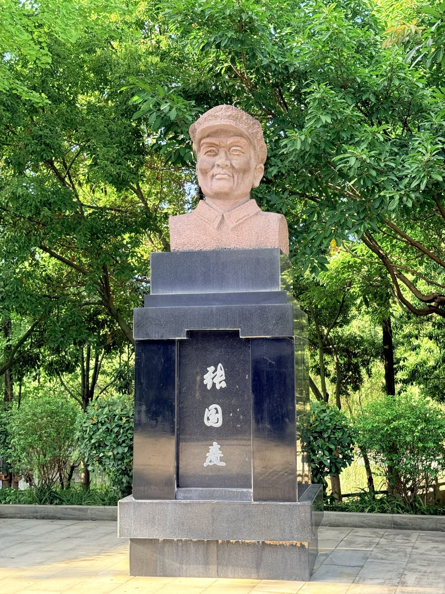
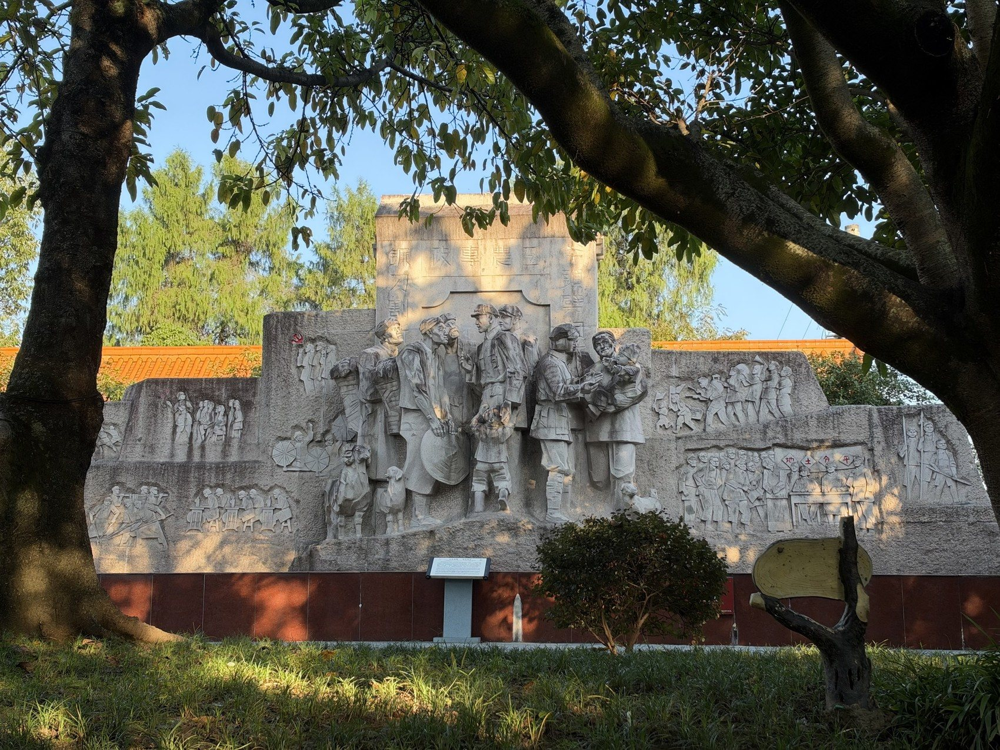
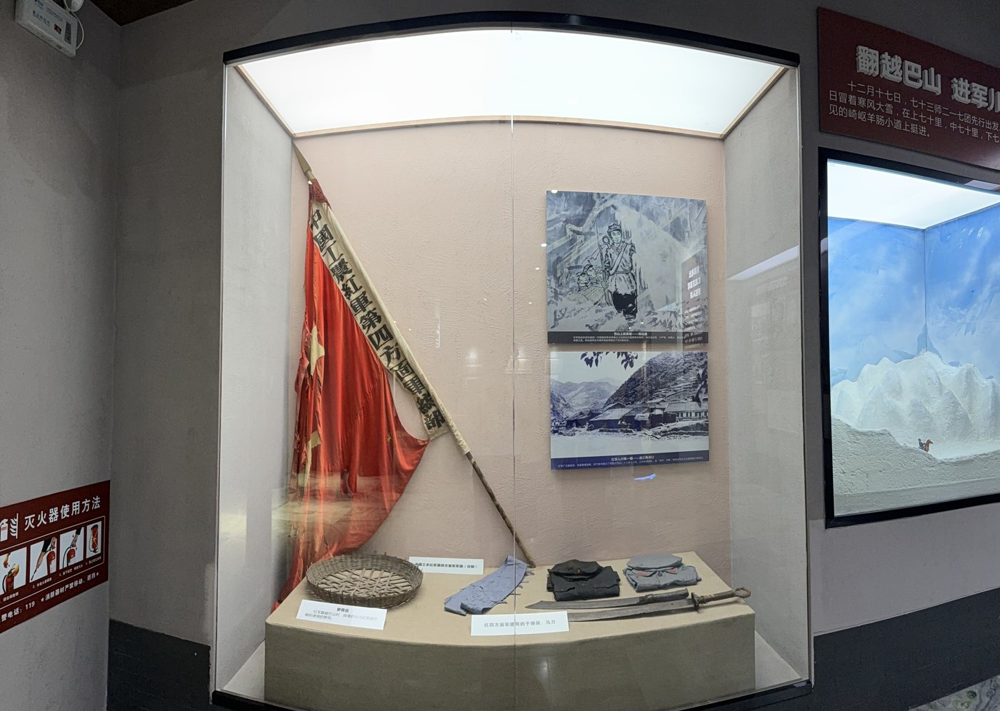

01
英名纪念碑
园区核心。碑体总高十六米，碑顶至碑文龛上口一点九三二米，对应一九三二年红军进山。

没有一堂一殿，只有碑、墙、廊、像：纪念被拆成可以行走的构件。
碑林园区占地一百二十余亩，十七处露天展示区依山就势，四千五百八十余块碑嵌在山坡与廊柱之间。
从山门拾级而上，先遇标志碑，再见英名纪念碑；绕碑一周，是十四万个名字组成的环形碑墙；再往深处，是红柱长廊与将领雕像园。
这些构件各司其职：碑定坐标，墙载名字，廊陈生平，像立其人。

从十六米的碑，到一块巴掌大的线刻。
园区核心。碑体总高十六米，碑顶至碑文龛上口一点九三二米，对应一九三二年红军进山。

碑墙呈圆环合抱，姓名以籍贯为序排列，十四万零八百二十个名字绕碑一周。

红柱回廊沿山势上行，两侧立三千二百三十七块将士个人纪念碑，碑上刻像、刻名、刻生平。

主要将领的石雕半身像依次而立，是园区最具肖像感的一处。

碑身正面刻《红四方面军战斗历程路线图（1927—1937）》，碑顶一簇火焰，是园区的方位坐标。

把标语直接刻上山岩，是那个年代最就地取材的宣传方式；字口深，风雨磨不平。

以浅浮雕铺开参军、支前、战斗的场景，把叙事交给石头的起伏。

与碑林同属一个纪念馆体系，馆藏革命物品一万五千余件，可看到红旗、武器与手迹。
第一层是碑额：姓名与称谓。第二层是碑文：籍贯、生卒、任职。第三层是线刻肖像，寥寥数笔，眉眼可辨。
第四层是碑的形制本身——石料、尺寸、边饰、字体。它们不说话，却标出了这块碑在整座碑林里的位置。
把四层读完，一个人才算从纸上站起来。
从选石到描金，一块碑要在山里待上许多年。
石头不会说话，但刻痕替它记着：谁的刀工、哪一年的石料、哪一次补刻。看碑的人未必在意，碑自己知道。